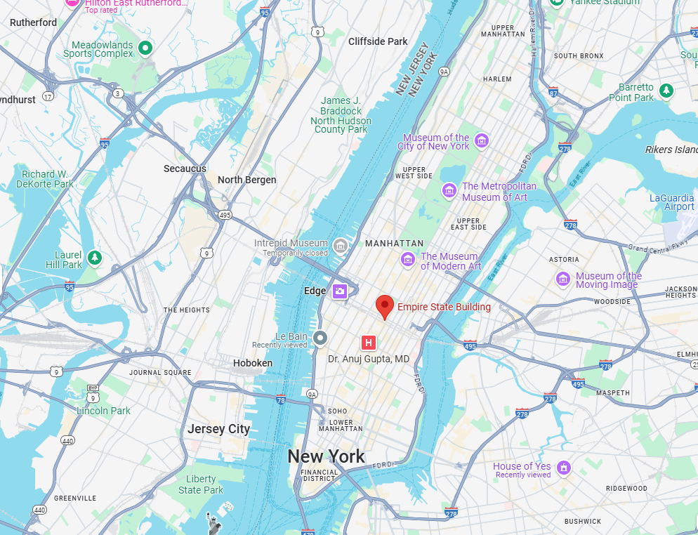

Gallery

Witness the grandeur of New York City's most iconic skyscraper.
The Empire State Building, an iconic 102-story Art Deco skyscraper in Midtown Manhattan, New York City, was designed by the architectural firm Shreve, Lamb & Harmon and constructed by Starrett Brothers and Eken. Its construction began on March 17, 1930, and was completed in just 13 months, opening on May 1, 1931. At the time, it became the tallest building in the world, standing at 1,454 feet (443.2 meters) including its antenna, and held this title for nearly 40 years until the completion of the World Trade Center's North Tower in 1970. Commissioned by John J. Raskob, a former General Motors executive, and Alfred E. Smith, a former New York governor, the building was intended as a symbol of progress during the Great Depression. However, it struggled financially in its early years, earning the nickname "Empty State Building" due to low occupancy rates.
The Empire State Building is celebrated for its Art Deco design, featuring a steel frame clad in Indiana limestone and granite, with setbacks and decorative elements. Its 86th-floor observatory offers panoramic views of New York City and has been a major tourist attraction since its opening. The building gained further cultural significance through its appearance in films, most notably the 1933 movie King Kong, where the titular character climbs the skyscraper. Over the years, it has become a global symbol of New York City and American ambition.
The Empire State Building Observatory is one of the most famous and visited attractions in New York City, offering breathtaking panoramic views of the city and beyond. Located on the 86th floor, the open-air observation deck stands at a height of 1,050 feet (320 meters) and provides 360-degree views of iconic landmarks such as Central Park, the Statue of Liberty, the Brooklyn Bridge, and Times Square. On clear days, visibility can extend up to 80 miles (129 kilometers), allowing visitors to see parts of New Jersey, Pennsylvania, Connecticut, and Massachusetts. For an even higher vantage point, the 102nd-floor observatory, enclosed with glass windows, sits at 1,250 feet (381 meters) and offers a more intimate viewing experience.
Empire State building on map
102 Floors - The building has 102 floors and an observation deck at the top.
Built in Record Time - Completed in just 1 year and 45 days.
16 Million Colors - The tower lights change colors for holidays and events.
Movie Star - Featured in over 250 films, including King Kong.